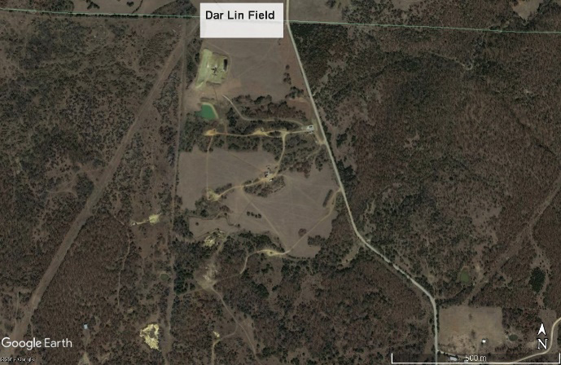
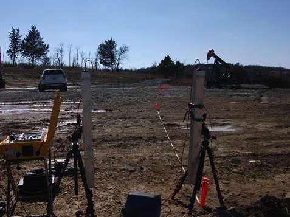
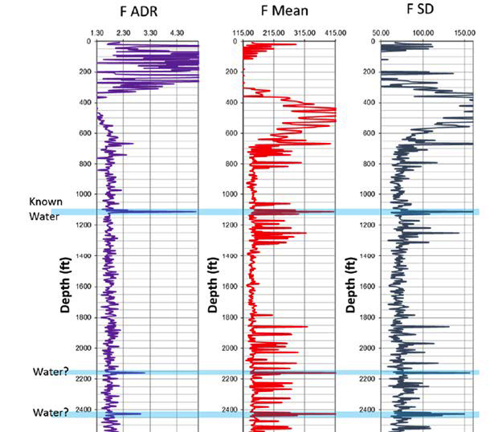
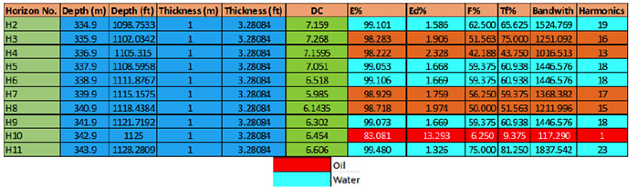
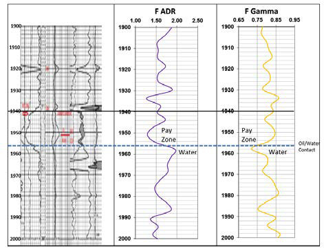
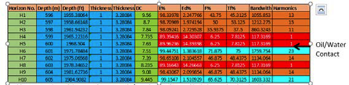
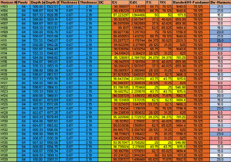
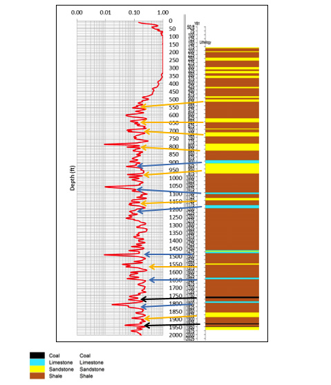
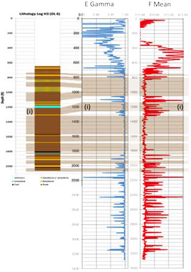

Identifying Oil and Water in Carboniferous Sandstone Reservoirs of Oklahoma
Project aims
The aims of this project were:
To reliably use Adrok’s measurements in conjunction with Caithness Petroleum Ltd drilling data, core data and/or other geophysical tool measurements at Caithness Petroleum Ltd drilled sites to gain a better understanding of subsurface lithology and presence/absence of oil and water.
To reliably use Adrok’s measurements at Caithness Petroleum Ltd undrilled exploration sites to gain a better understanding of subsurface depths to key rock horizons and subsurface zones of oil and water.
Exploration/Project challenges
Land seismic for deep exploration expensive and requires large vehicles which makes exploration difficult in compact spaces and in within 1km. Seismic also has difficulties identified water. Adrok was tasked with identifying the following, oil, oil and water together and water. Drilling alone is also risky without clear knowledge of the subsurface.
Geological context
The study area is located within the Cherokee Platform in North Central Oklahoma. The target reservoir was the Cleveland Sandstone which formed during the late Carboniferous. However, it was thought that the limestones could also act as potential reservoir. The target reservoirs were between 1150ft and 1950ft.
 Figure 1: Location of the Dar Lin Field  Figure 2: ADR equipment in use in the field site.Adrok’s results
Adrok processed eight out ten V-bores that were collected. Stares and WARRs were collected at all sites to 1000m or 3280.840 ft depth. V-bores were processed at two metre intervals.
A training V-bore was provided for each of the different of types of hole of oil, water and oil/water together. For the training V-bore water was identified by peaks in the frequency harmonics (figure 3) at the corresponding depths and then taking a subimage at these depth intervals and analysing the results in more detail (figure 4).
 Figure 3: Mean frequency harmonics.  Figure 4: Extracted energy and frequency values from the known water layer noted in figure 3.Where oil and water are found together the same approach also worked. A trough in F-ADR and a peak in F-Gamma occurred within the pay zone and in the presence of water a peak in F-ADR and a trough in F-Gamma (figure 5).
 Figure 5: Frequency harmonics within the payzone against a wireline log.A subimage was taken of the area between 1955ft and 1985ft across the pay zone. In this it was noted high energy density values appear just above extremely low energy density values (figure 6).
 Figure 6: Extracted energy and frequency values for the oil/water contact.The same technique was also tested for the oil only V-bore at Dar-Lin 13, although the bandwidth harmonics do not reach the lows seen in Dar-Lin 9, values as low as 7 and 8 are still observed where oil is thought to be present the energy density values are also much higher figure 7.
 Figure 7: Extracted energy and frequency values for the oil in Dar-Lin 13 showing areas of low bandwidth and high energy density highlighted.E-logs and harmonics were also used for identifying changes in lithology. Troughs in e-log match the location of limestone while peaks e-log appear to match for sandstone.
 Figure 8: Comparing lithology data with e-log for Yarberry 1 showing peaks and troughs corresponding with different lithologies.Energy harmonics were also used to identify lithological controls in Dar-Lin 6, for example highs in E-Gamma and troughs in F-Mean appear to shales and the inverse is true for sandstone (Figure 9).
 Figure 9: Comparing lithology data with harmonics for Dar-Lin 6.Benefits for client
Adrok has demonstrated the ability to identify of different lithologies such as sandstone and shales and have also been able to differentiate between oil and water without requiring drilling or using heavy machinery.